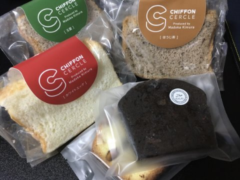

シフォンケーキ
2022年2月21日
22:59
株式会社セルクル - Produced by Madoka Kimura
1個300円くらい？
プレーン：ふわふわしっとりで美味しい。ベーキングパウダー抜きってあるけどそれほど普通のシフォンケーキとの差は感じない？かも？ちょっとしっとりしすぎな感じはある。でも気にならない。
ケーキ屋さんのカットケーキとして売ってるシフォンに比べるとちょっと柔らかめで市販量産品っぽさはあるけど、食べやすい味って感じで好印象。
■シフォン
■パウンドケーキ

OneNote で作成されました。